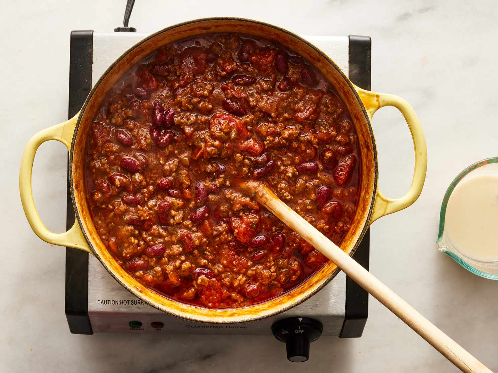

Delicious Chilli con Carne

Chili con carne is a hearty, spicy stew made with ground beef, beans, tomatoes, and a blend of aromatic spices. This classic dish is perfect for cold days and is often served with rice, cornbread, or tortillas.
Ingredients
- 1 lb (450g) ground beef
- 1 onion, chopped
- 2 cloves garlic, minced
- 1 bell pepper, chopped
- 1 can (14 oz) diced tomatoes
- 1 can (15 oz) kidney beans, drained and rinsed
- 2 tablespoons chili powder
- 1 teaspoon cumin
- Salt and pepper to taste
- Olive oil
Preparation:
- Heat olive oil in a large pot over medium heat. Add onion, garlic, and bell pepper; sauté until soft.
- Add ground beef and cook until browned. Drain excess fat.
- Stir in diced tomatoes, kidney beans, chili powder, cumin, salt, and pepper.
- Bring to a boil, then reduce heat and simmer for 30 minutes, stirring occasionally.
- Serve hot, garnished with cheese, sour cream, or fresh cilantro if desired. Enjoy!